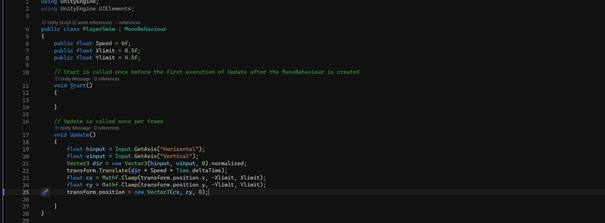
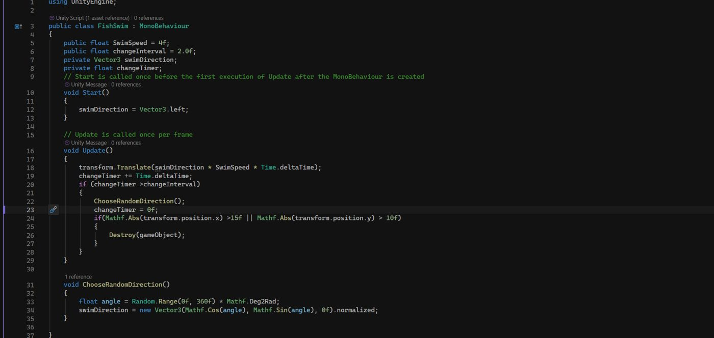
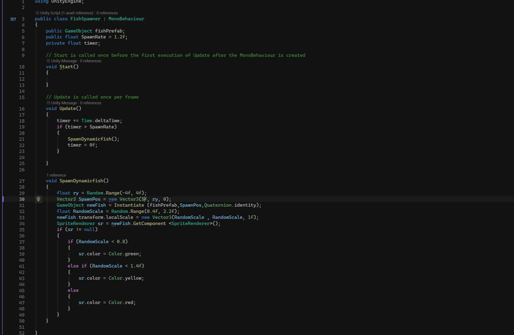
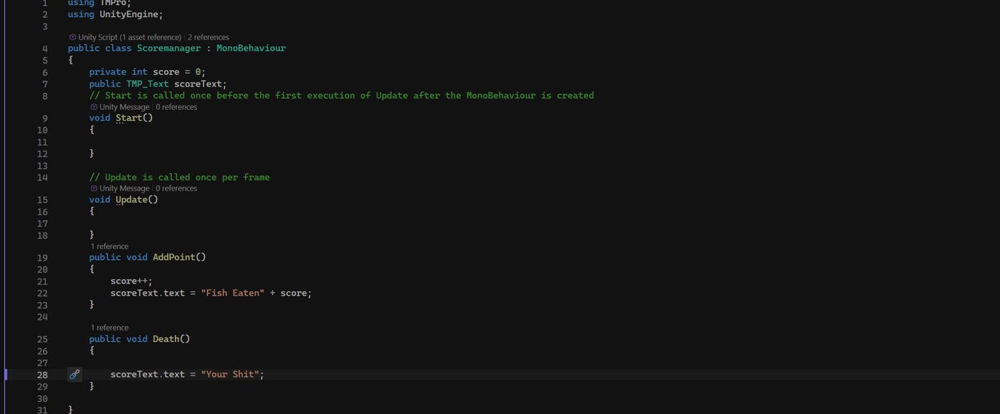
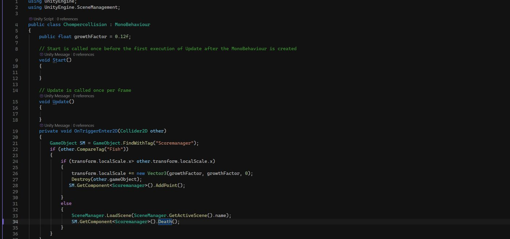

Unity games
Fish Eater
Swim, eat smaller fish, grow. Fish spawn at random sizes and are colour-coded so you can tell what's safe to eat.
Gameplay
How it works
PlayerSwim reads the keyboard axes for fluid movement and clamps you inside the screen. FishSwim gives each fish a random direction, changes it every few seconds, and destroys the fish if it leaves the play area.
FishSpawner is where the interesting part is: every fish spawns at a random scale and position, then gets a colour based on its size — green is safe, yellow is risky, red will eat you. ScoreManager shows how big you are and gives you a goal, and ChomperCollision grows the player when it eats a fish and ends the game when it dies.
Featured code
FishSpawner.cs — random size, colour by size
void SpawnDynamicfish()
{
float ry = Random.Range(-4f, 4f);
Vector3 SpawnPos = new Vector3(9f, ry, 0);
GameObject newFish = Instantiate(fishPrefab, SpawnPos, Quaternion.identity);
float RandomScale = Random.Range(0.4f, 2.2f);
newFish.transform.localScale = new Vector3(RandomScale, RandomScale, 1f);
SpriteRenderer sr = newFish.GetComponent<SpriteRenderer>();
if (sr != null)
{
if (RandomScale < 0.8) sr.color = Color.green;
else if (RandomScale < 1.4f) sr.color = Color.yellow;
else sr.color = Color.red;
}
}One random number drives both the size and the colour, so the warning the player sees is always true.
All the scripts
5 scripts, each with what it does in my words.





Confidence, before and after
Really fun and challenging. Going in I was 7/10 and coming out 6/10 — I learnt a lot of new things that grew my confidence, but it also reminded me there's still a lot I don't know. I could recreate it with mild difficulty.